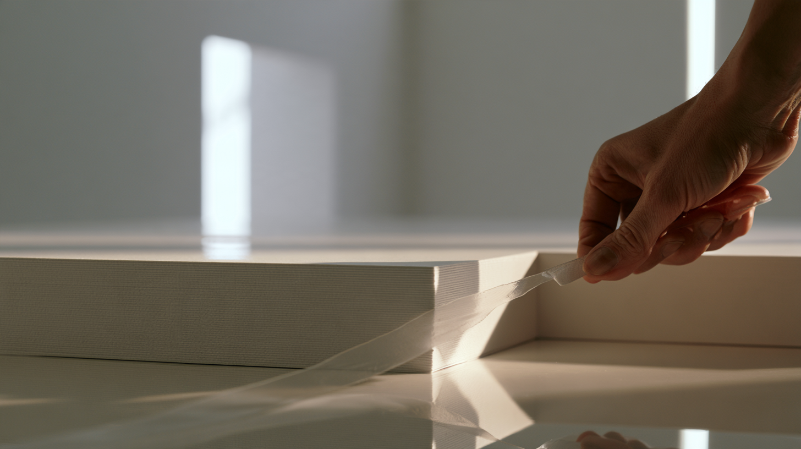
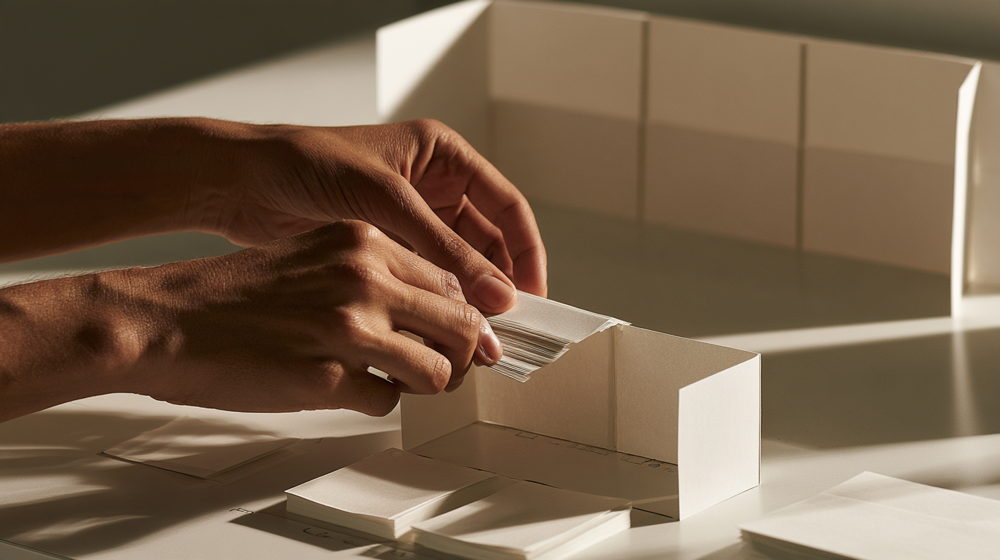
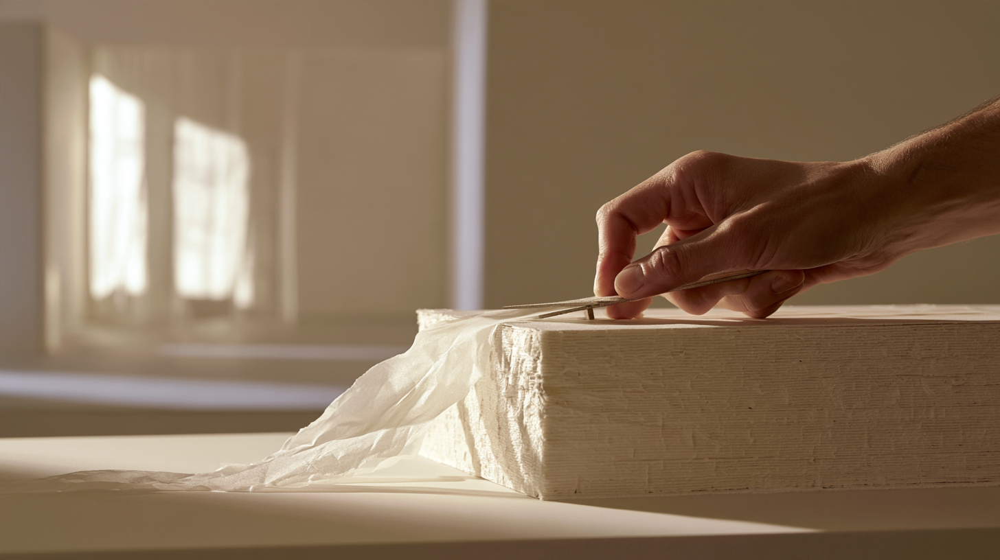

Substance
What if information had material properties?

The premise
Digital information is usually represented. A number. A slider. A color. A layer on a screen.
But physical things already communicate degree through their substance.
What if it could have substance?
Thickness was the first property that made the idea visible.
Add
This matters more.
Add a layer.
Add another.
The information becomes physically more present. It occupies space. It casts an edge and a shadow. Other things have to accommodate it.

They can become more substantial.
Remove
Less of this.
Take a shaving.
Look at it.
Take another.

It recedes.
Reduction becomes continuous rather than binary. Prominent becomes present. Present becomes background. Background becomes trace.
The removed material can remain nearby. Editing leaves evidence of what changed.
Think with it
The material can be arranged as well as altered. Tear it. Stack it. Fold it upright. Put one thing inside another. Open a boundary. Build something up. Shave something down.
A house might emerge from the relationships, but the house isn't the idea. It is evidence that material properties can become a way to reason.
You are working the material until the idea feels right.
Invisible computation
The material doesn't need to look digital.
It can remain ordinary, tactile and legible to the hands. Computation understands its state, its relationships and the changes being made to it.
The consequence might manifest physically, digitally, or somewhere else entirely. The interface doesn't need to explain the machinery.
Consequences happen there.
Thickness was one property
What happens when those properties begin to interact?
Don't hide it.
Let it recede.
Substance explores information as something with physical qualities rather than something represented only through controls. Thickness is the first experiment, not the limit of the idea.